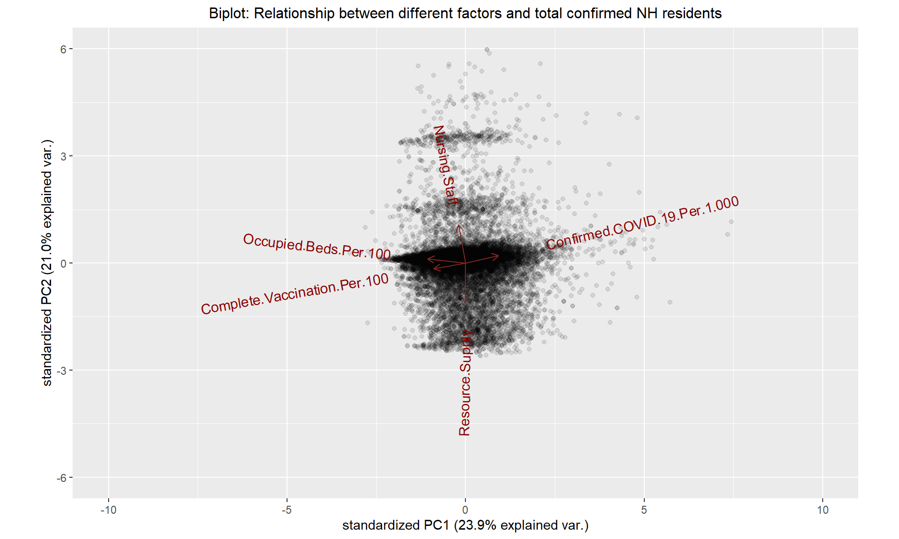
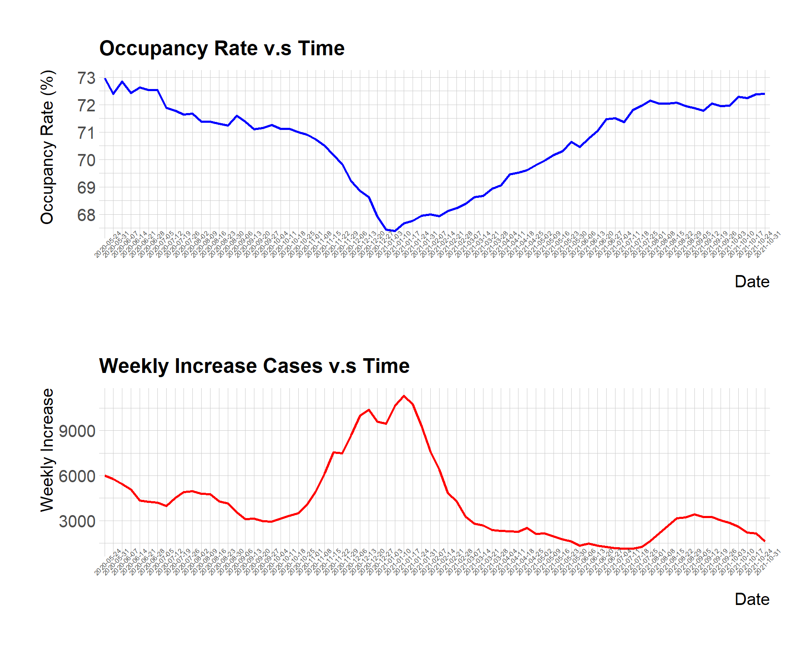
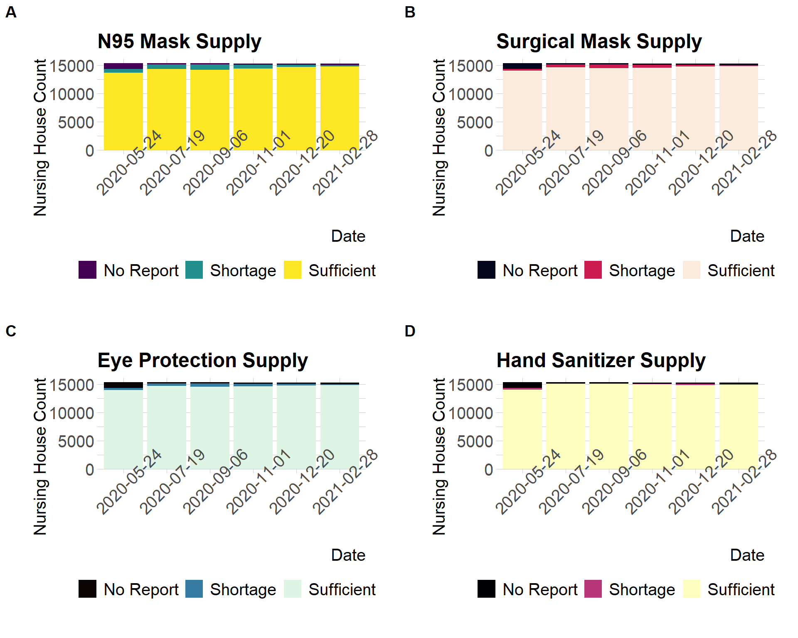
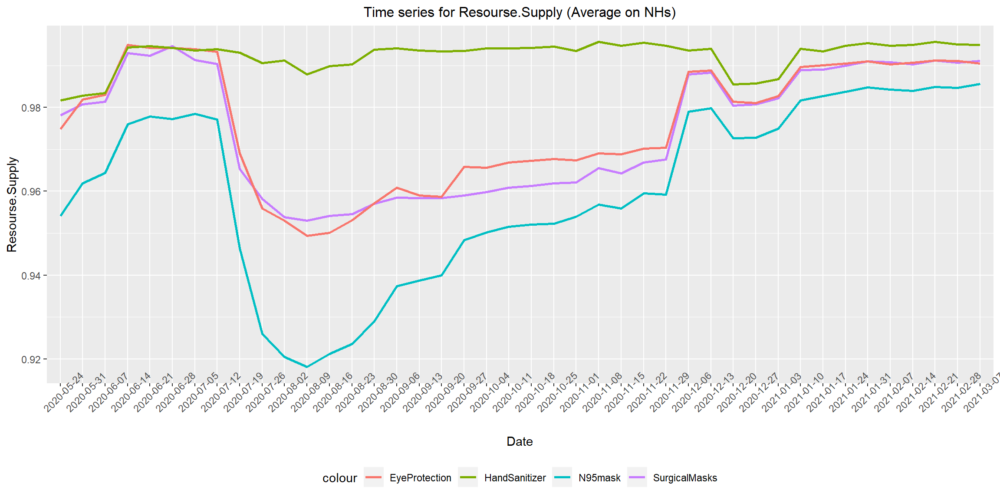

Chapter 5 Results
5.0.1 Overview on Pandemic Situation in Nursing Homes
Note: Red bars represent positive rates (per 1000) within nursing home (abbreviated as NH) residents and blue bars represent state overall positive rates (per 1000).
Previous research suggests that the cumulative COVID-19 positive rate within nursing homes across the US has reached 550 per 1000 residents (Williams, et al, 2021), which is more than 4 times of the overall positive rate of 82 per 1000 people in the US, according to KFF statistics (2021). This is a worrying issue. To further investigate whether positive rates within nursing homes have regional disparities, we took advantages of our datasets and added faceted results by state to previous research. This map visualization suggests that positive rates within nursing homes exceeds overall confirmed rates by far in every state with no exception.
This regression plot adds on to our research by quantifying the comparison between positive rates within nursing homes and those across the states. From the slope of the regression line, positive rates within nursing homes are about 3.39 times as much as those across the states, which is in a reasonable range of the previous research results.
5.0.2 Data Mining for Influencial Factors

This biplot provides initial insights for further investigation into related or unrelated factors for positive rates within nursing homes. It is drawn using the most recent data points, as we would like to focus more on influential factors at the current stage. We assume that most factor names in this plot are self-explanatory. For those requiring explanations, ‘Resourse.Supply’ is a combined variable created by assigning a score to each NH based on the original data on the supply of N95mask, SurgicalMasks, EyeProtection and HandSanitizer. ‘Nursing.Staff’ represents sufficiency of nursing staff for each NH.
By looking at correlations between different factor dimensions and our response dimension - Confirmed.COVID.19.Per.1000 (within nursing homes), this biplot provides the following insights:
At the current stage, vaccination rates have the strongest negative relationship with COVID-19 confirmation rates.
Bed occupation rates are negatively related to COVID-19 confirmation rates, which may be counter-intuitive. Because an efficient way to avoid infecting COVID-19 is to decrease the interaction among people, which will decrease the spread of virus through breath or talking, we thought as occupancy rate decreases, the weekly increase cases will decrease along with it.
Sufficiency of resources and nursing staff are slightly negative related to COVID-19 confirmation rates.
5.0.3 Data Evidence
We first look into the most related factor, vaccination rates. The above two map visualizations for confirmation rates and vaccination rates show right opposite color distributions. From the state level, higher vaccination rates are associated to lower confirmation rates. However, we here remind that our analysis reveals a universal phenomenon, while the efficiency of vaccinations is proven by scientific experiments. With the effort of scientists across the world, COVID-19 vaccination has become an efficient way to protect our health. For more data evidence on vaccination, please refer to the interactive part.
For bed occupation rates, we assume that there could be underlying reasons that can explain this possibly counter-intuitive phenomenon at the current stage. By introducing an additional dataset on NH ratings, this new biplot shows that bed occupation rates are correlated with the overall ratings for nursing homes. People could be voting via their choices. Good nursing homes may also do better in epidemic prevention. Therefore, high bed occupation rates are not necessarily related to high COVID-19 confirmation rates and could possibly suggest the opposite way. From another perspective, it is important to do a comprehensive survey before choosing a nursing home.

During the peak of the pandemic in 2020, the reason might again be different. It probably because as the weekly increases cases and risk of the infection become larger and larger, more residents tend to leave nursing house and go back home for safety. And when weekly increases cases become smaller and the application of vaccines, most residents choose to return to nursing houses. That explains why when weekly increases cases reached its maximum on January 2021, the occupancy rate of nursing houses dropped to its minimum, when most residents have left.

Next we will look at pandemic prevention equipment (PPE) supply in nursing houses across the U.S. These plots show a general view from six selected dates. On 2020-05-24, we can notice that greater ratios of nursing houses of the U.S had the shortages for all four types of PPE. On 2020-07-19, the shortage for hand sanitizers was firstly solved and after that, this ratio has been stay at a low level. However, shortage for surgical masks, N95 masks and eye protections lasted till 2020-12-20, when the ratio began decreasing to a relatively low value and the shortage for N95 masks is the most serious. It means these shortages lasted nearly for half a year, which corresponded to the increase of resident cases in the second half of 2020. Fortunately, the shortage ratios dropped to a satisfying level on 2021-02-28.

From this times series plot, we can see it clearer that nursing homes have experienced greater resource shortages in the second half of 2020. However, As the manufacturing industry across the world has been back on track now, recent data points suggest that resource shortages are no longer a critical issue for nursing homes. Therefore, our data does not tell that resources are not important, but possibly as time changes, new issues become more influential. At the current stage, ensuring the implementation of epidemic prevention practices and making good use of resources could be issues that deserve more attention.